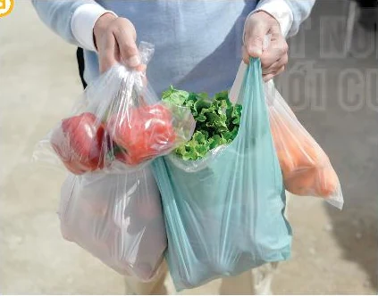
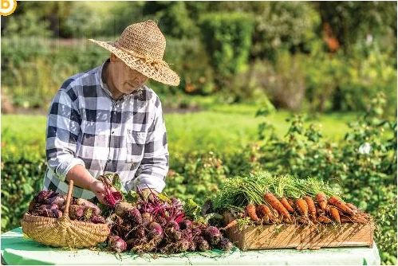
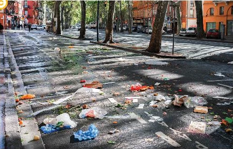
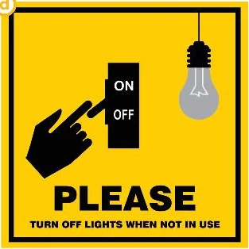

Green living
Lesson 3 — Reading
Four stops in 45 minutes
- 🔤
Crossword
Nine clues, one keyword
6 min - 🔎
Before you read
Five words + four pictures
11 min - 📖
While you read
Tasks 2, 3 and 4 · page 22
19 min - 💬
After you read
Which way is easiest?
7 min
By the end of this lesson…
- 👀
Reading skills
Skim for the main idea, scan for details, and guess a word from the sentence around it.
- ♻️
Vocabulary
Talk about sustainable habits and how materials get reused.
…and also
- 🌱
Personal quality
Pick one green habit you can actually start this week.
- 🤖
Digital & AI
10.C2.3 summarise articles with AI · 10.A1.2 judge whether the advice is reliable
Crossword
Nine clues, one keyword
6 minutesSolve the clues, find the keyword
- 1 · rubbish dropped in the street
- 2 · kind to the planet
- 3 · the CO₂ you cause
- 4 · what a solar panel gives you
- 5 · to do with the home
- 6 · to start using a new way of living
- 7 · young people
- 8 · to put a tree in the ground
- 9 · knowing that something matters
What is the keyword?
litter · eco-friendly · carbon footprint · energy · household · adopt · youth · plant · awareness → keyword LIFESTYLE
Before you read
Words first, then pictures
11 minutesFive words for the text · 1–2
- explosion (n) /ɪkˈspləʊʒn/ vụ nổ, sự bùng nổ
- method (n) /ˈmeθəd/ phương pháp, cách thức
Five words for the text · 3
- refillable (adj) /ˌriːˈfɪləbl/ có thể làm đầy lại, tái sử dụng
Five words for the text · 4–5
- raw material (np) /ˌrɑː məˈtɪəriəl/ nguyên liệu thô
- sort (v) /sɔːt/ phân loại, sắp xếp
Which pictures show green living? · page 21




Now say why, not just which
Now say why, not just which. Picture b shows green living because organic food needs fewer chemicals and travels a shorter distance.
While you read
Tasks 2, 3 and 4 · page 22
19 minutesRead fast. Which title fits?
📖 Textbook, page 22
You have 90 seconds. Do not stop at unknown words — you are only looking for what the whole text is about.
Which title did you choose? A — Green Living
Choose the meaning · page 22
Read the sentence around each highlighted word before you choose.
- 1 · sustainable a
- 2 · refillable b
- 3 · raw materials a
- 4 · sort a
Correct the false ones · page 22 · 1–2
- Green living is compulsory for everyone. FALSE It is a choice, not something you must do.
- Refillable bottles cut down on plastic waste. TRUE
Correct the false ones · page 22 · 3–4
- Sorting rubbish helps materials get used again. TRUE
- Buying local food is not encouraged. FALSE It is encouraged.
10.A1.2 Point to the exact line in the text that proves your answer.
After you read
Pairs
7 minutesWhich suggestion is the easiest to start?
“In our opinion, turning off household appliances when we are not using them is the easiest way to live green, because we can do it immediately at home — no extra cost, no special equipment.”
Notice the shape: choice + because + why it is easy.
10.C2.3 Which habit could your whole class start on Monday?
Before you go
Today’s board
Words: explosion · method · refillable · raw material · sort
Green habits: refillable bottles · organic food · sorting waste
Homework
Homework
1. Workbook — Reading exercises.
2. 10.A1.2 Find one reliable fact about green living online and post it on the class forum — with the source.
3. Prepare for Lesson 4 — Speaking.